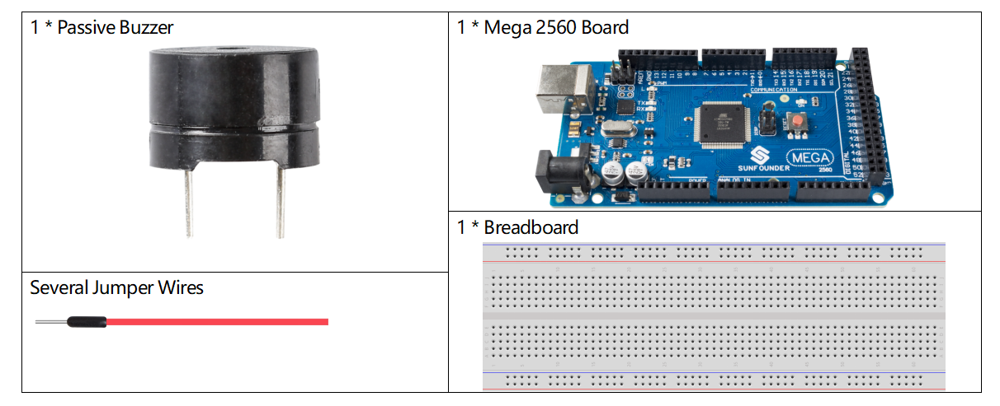

2.11 Passiver Summer¶
Überblick¶
In dieser Lektion lernen Sie den passiven Summer kennen. Passiver Summer ist ein elektronischer Summer mit integrierter Struktur, der von einer Gleichstromquelle gespeist wird und in Computern, Alarmen, elektronischem Spielzeug, Telefonen, Zeitschaltuhren und anderen elektronischen Produkten oder Sprachgeräten weit verbreitet ist.
Erforderliche Komponenten¶
Komponenteneinführung¶
Summer können in aktive und passive unterteilt werden (siehe folgendes Bild). Drehen Sie den Summer so, dass seine Nadel nach oben zeigt, der Summer mit der grünen Leiterplatte ist ein passiver Summer und der mit schwarzem Klebeband umwickelte Summer ist ein aktiver Summer.
Der Unterschied zwischen einem aktiven und einem passiven Summer:


Fritzing Circuit¶

In diesem Beispiel verwenden wir den Pin 9, um den Summer anzutreiben. Wir bringen die Kathode des Summers auf GND und die Anode auf den digitalen Pin 9.
Schematische Darstellung¶

Code¶
Wenn Sie mit dem Hochladen der Codes auf das Mega2560-Board fertig sind, hören Sie eine Melodie mit sieben Noten.
Code-Analyse¶
Es gibt zwei Punkte, die Ihre Aufmerksamkeit erfordern:
① Ton () & noTone (): Mit dieser Funktion wird der Klang des passiven Summers direkt gesteuert. Der Prototyp lautet wie folgt:
void tone(int pin, unsigned int frequency)
void tone(int pin, unsigned int frequency, unsigned long duration)
Erzeugt eine Rechteckwelle mit der angegebenen Frequenz (und einem Tastverhältnis von 50%) an einem Pin (damit der passive Summer vibriert und Geräusche erzeugt). Eine Dauer kann angegeben werden, andernfalls wird die Welle bis zu einem Aufruf von noTone () fortgesetzt. Der Pin kann an einen Piezo-Summer oder einen anderen Lautsprecher angeschlossen werden, um Töne abzuspielen.
Es kann jeweils nur ein Ton erzeugt werden. Wenn ein Ton bereits auf einem anderen Pin abgespielt wird, hat der Aufruf von Ton () keine Auswirkung. Wenn der Ton auf demselben Pin abgespielt wird, stellt der Anruf seine Frequenz ein.
Die Verwendung der Funktion ton () stört die PWM-Ausgabe an den Pins 3 und 11 (auf anderen Karten als der Mega).
Es ist nicht möglich, Töne unter 31 Hz zu erzeugen.
Pin: Der Arduino-Pin, auf dem der Ton erzeugt werden soll.
Frequenz: Die Frequenz des Tons in Hertz.
Dauer: Die Dauer des Tons in Millisekunden (optional)
void noTone(int pin)
Stoppt die Erzeugung einer durch Ton () ausgelösten Rechteckwelle. Hat keine Auswirkung, wenn kein Ton erzeugt wird.
Pin: Der Arduino-Pin, auf dem der Ton erzeugt werden soll.
Nachdem Sie diese beiden Funktionen kennen, können Sie den Code beherrschen: Die Installation der Array-Melodie [] und des Arrays noteDurations [] ist die Vorbereitung für die nachfolgenden Aufrufe des Funktion Tons () und die Vorbereitung für die Änderung von Ton und Dauer. Loop-Wiedergabe für einen besseren Musikwiedergabeeffekt.
② Pitches.h: Der Code verwendet eine zusätzliche Datei, Pitches.h. Diese Datei enthält alle Tonhöhenwerte für typische Noten. Zum Beispiel ist NOTE_C4 Mitte C. NOTE_FS4 ist Fis und so weiter. Diese Notentabelle wurde ursprünglich von Brett Hagman geschrieben, auf dessen Arbeit der Befehl ton () basierte. Sie können es nützlich finden, wenn Sie Noten machen möchten.
#include "pitches.h"
Bemerkung
In diesem Beispielprogramm befindet sich bereits eine Datei Pitches.h. Wenn wir es mit dem Hauptcode in einem Ordner zusammenfassen, können die aufeinander folgenden Schritte zum Installieren von Pitches.h weggelassen werden.

Wenn Sie nach dem Öffnen des Codes 2.11passiveBuzzer den Code Pitch.h nicht öffnen können, können Sie ihn einfach manuell installieren. Die Schritte sind wie folgt:
Um die Datei pitches.h zu erstellen, klicken Sie entweder auf die Schaltfläche direkt unter dem Symbol für den seriellen Monitor und wählen Sie „Neue Registerkarte“ oder verwenden Sie Strg + Umschalt + N.

Fügen Sie dann den folgenden Code ein und speichern Sie ihn als Pitch.h:
/*****************
Public Constants
*****************/
#define NOTE_B0 31
#define NOTE_C1 33
#define NOTE_CS1 35
#define NOTE_D1 37
#define NOTE_DS1 39
#define NOTE_E1 41
#define NOTE_F1 44
#define NOTE_FS1 46
#define NOTE_G1 49
#define NOTE_GS1 52
#define NOTE_A1 55
#define NOTE_AS1 58
#define NOTE_B1 62
#define NOTE_C2 65
#define NOTE_CS2 69
#define NOTE_D2 73
#define NOTE_DS2 78
#define NOTE_E2 82
#define NOTE_F2 87
#define NOTE_FS2 93
#define NOTE_G2 98
#define NOTE_GS2 104
#define NOTE_A2 110
#define NOTE_AS2 117
#define NOTE_B2 123
#define NOTE_C3 131
#define NOTE_CS3 139
#define NOTE_D3 147
#define NOTE_DS3 156
#define NOTE_E3 165
#define NOTE_F3 175
#define NOTE_FS3 185
#define NOTE_G3 196
#define NOTE_GS3 208
#define NOTE_A3 220
#define NOTE_AS3 233
#define NOTE_B3 247
#define NOTE_C4 262
#define NOTE_CS4 277
#define NOTE_D4 294
#define NOTE_DS4 311
#define NOTE_E4 330
#define NOTE_F4 349
#define NOTE_FS4 370
#define NOTE_G4 392
#define NOTE_GS4 415
#define NOTE_A4 440
#define NOTE_AS4 466
#define NOTE_B4 494
#define NOTE_C5 523
#define NOTE_CS5 554
#define NOTE_D5 587
#define NOTE_DS5 622
#define NOTE_E5 659
#define NOTE_F5 698
#define NOTE_FS5 740
#define NOTE_G5 784
#define NOTE_GS5 831
#define NOTE_A5 880
#define NOTE_AS5 932
#define NOTE_B5 988
#define NOTE_C6 1047
#define NOTE_CS6 1109
#define NOTE_D6 1175
#define NOTE_DS6 1245
#define NOTE_E6 1319
#define NOTE_F6 1397
#define NOTE_FS6 1480
#define NOTE_G6 1568
#define NOTE_GS6 1661
#define NOTE_A6 1760
#define NOTE_AS6 1865
#define NOTE_B6 1976
#define NOTE_C7 2093
#define NOTE_CS7 2217
#define NOTE_D7 2349
#define NOTE_DS7 2489
#define NOTE_E7 2637
#define NOTE_F7 2794
#define NOTE_FS7 2960
#define NOTE_G7 3136
#define NOTE_GS7 3322
#define NOTE_A7 3520
#define NOTE_AS7 3729
#define NOTE_B7 3951
#define NOTE_C8 4186
#define NOTE_CS8 4435
#define NOTE_D8 4699
#define NOTE_DS8 49